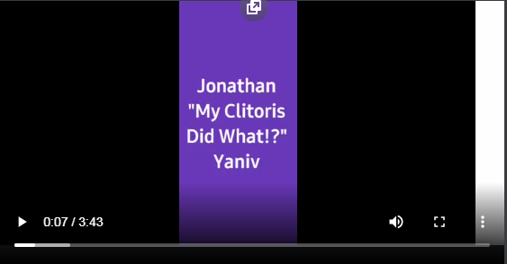

Jessica Yaniv's Male Clitoris Has Fallen Off
June 29th, 2021

How it started: Wax my Female Balls.
How it's going: My Male Clitoris has Fallen Off.
Backstory on Yaniv can be found here.

The beautiful Yaniv
Well recently Jessica Yaniv's male clitoris has fallen off.
I mean, I could kind of just end this article right now, I'll be writing the rest from a certain stupor, but I decided instead that I'll do a transcript of his entire clit falling off journey. Buckle the fuck up buttercup. Transcript below.
TDC_ARTICLE_START
I went to the doctors. And I went... I went to the urgent care center. And I have them do an exam on me. Aaaaaand they told me thaaaat (this guy fucking talks like a drunk) ... tell me that my clitoris has fallen off. And they showed me where it did fall off. But... it's the doctor told me that it's like impossible for me to comprehend.
Sooooo I goooot the guy to send, take some pictures of that area. I sent them over to my surgeon. The second surgeon. I have two surgeons who did my surgery. And... they don't believe it. Itsssssss. Itsssssss. Not impossible but itssss so rare that something like that can happen. Because, how do I put it? The clitoris is basically the tip. The tip of my old dick? Honestly.
And like, like with the vein and everything. Like with the vein and the blood supply. So like, if that were to happen, I would be dead, because that would be bleeding out like crazy. So it doesn't make sense. Every doctor has told me something different, and that's why I don't trust *sigh doctors. I don't trust them at all.
Uhmmm. It's not there. I don't know where it went. It's not there anymore. So... I'm going tomorrow, to have a checkup by a nurse from transcare BC. That knows this stuff she's gonna look into it with a second nurse. Two nurses are going to do a full exam on me. And, I'm really stressed out.
Things have not gone the way I wanted it to with the surgery. Uhm... I know I knowwww it looks great except it doesn't. It's not the result I really expected. I know it's still healing and it's still swollen and stuff. But it's like, I'm four months now. Four almost five. And two weeks. But... it's stressful. It's really.
Kinda *inaudible. And it's not feel so good. I feel sick like right now. I feel like paint? I haven't eaten all day, and it's not good. Uhm. I have to eat something. I don't feel good. And it's because of my sugars and... it's my fault. It's truly my fault. Because I'm not taking care of myself at all. Like I'm just not acting myself like completely.
TDC_ARTICLE_STOP